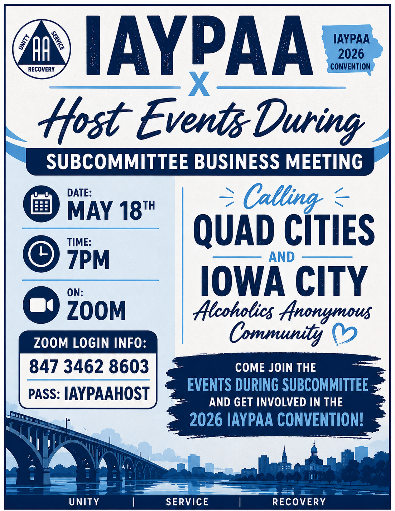
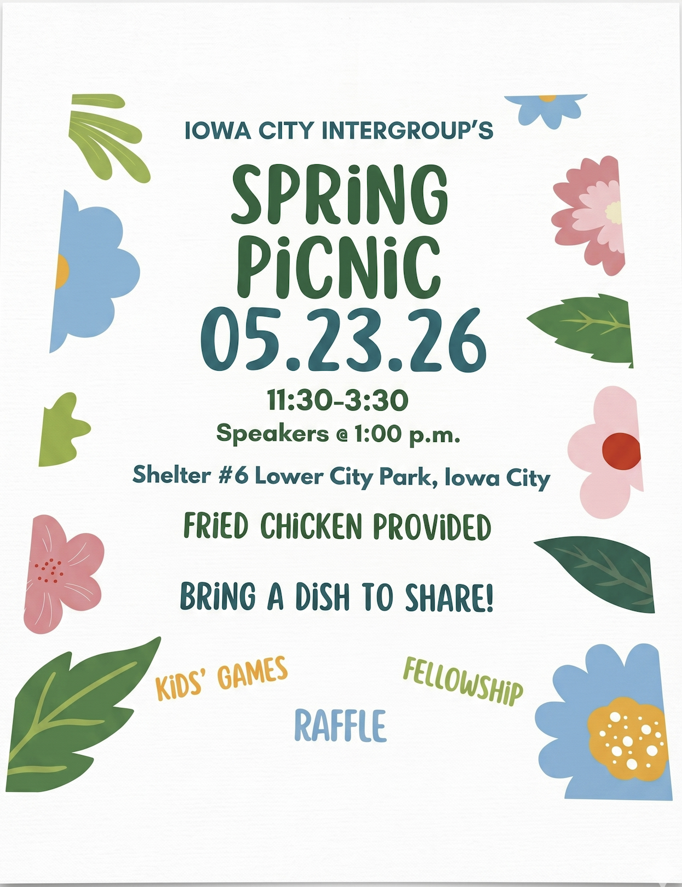
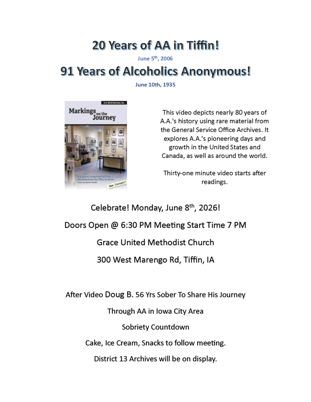
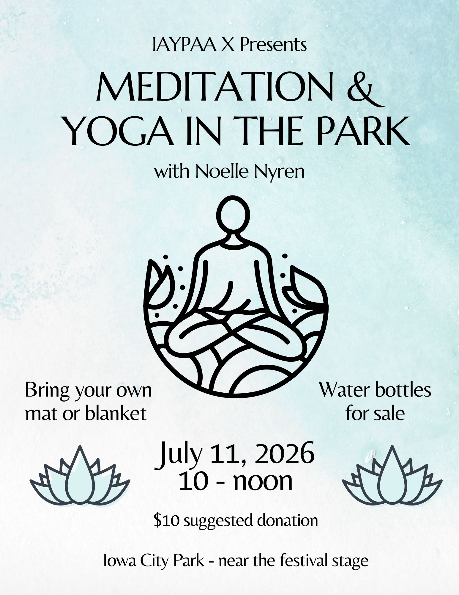

A fellowship of people who share their experience, strength and hope with each other. You are welcome here.
511 Melrose Ave, Iowa City, IA 52240 · Directions →
All times Central Time (Iowa City, IA)
"We are people who normally would not mix. But there exists among us a fellowship, a friendliness, and an understanding which is indescribably wonderful."
— Alcoholics Anonymous (Big Book), Chapter 2Walking through the door for the first time takes courage. Here's what you can expect at Melrose — no surprises, no judgment, just people who understand.
If you think you might have a problem with alcohol, you've come to the right place. The only requirement for AA membership is a desire to stop drinking — that's it. You don't need to sign up, pay anything, or make any commitments. Just show up.
The 511 Melrose building has been a home to AA meetings in Iowa City for decades. When you arrive, you'll find coffee, friendly faces, and people who have been exactly where you are. Many of us were nervous the first time too.
Our Monday 6 PM Beginner's Meeting is specifically designed for people who are new or returning to AA. It's a great place to start — but you're welcome at any meeting on the schedule.
Every meeting is a little different, but here's the general shape of things.
No registration, no appointment, no RSVP. Walk in, grab a cup of coffee, and find a seat. If you feel comfortable, let someone know it's your first time — they'll be glad to help you feel at home.
You will never be required to speak. Most meetings include a moment for newcomers to introduce themselves by first name only — but that's entirely optional. Many people attend their first several meetings quietly.
Meetings typically open with a reading, followed by sharing — one person at a time talking about their experience with alcoholism and recovery. Some meetings have a speaker, others are open discussion. All are confidential.
AA is free. A basket is passed for voluntary contributions (our "7th Tradition"), but newcomers are asked not to contribute. We want you here regardless of your financial situation.
AA welcomes people of all backgrounds — every age, race, gender, sexual orientation, religion (or none), and walk of life. The only thing we have in common is that we want to stop drinking.
One meeting might change your life, or it might take a few to feel comfortable. That's normal. Try different meetings and times. Many people find that regular attendance is what makes the difference.
Different meetings serve different needs — here's a quick guide.
Anyone is welcome — members, family, friends, or anyone curious about AA.
Reserved for people who have a desire to stop drinking. A safe space for deeper sharing.
Focused on Steps 1, 2, and 3. Questions encouraged. Experienced members help newcomers.
Reading and discussing "Alcoholics Anonymous" chapter by chapter. Great for learning the program.
A topic is introduced and members share their experience as it relates. The most common format.
One or two members share their story — what it was like, what happened, and what it's like now.
AA has a rich library of literature available — much of it free online. These are the official, AA-approved resources that power our meetings and our recovery.
AA's foundational text. Contains the program of recovery, the Twelve Steps, and dozens of personal stories.
Read at aa.org →Bill W.'s deeper exploration of each Step and Tradition. Essential reading for personal recovery and group unity.
Read at aa.org →A short reading for each day of the year, written by AA members. A wonderful daily companion for your recovery.
Read today's reflection →Twelve questions only you can answer. If you're wondering whether you belong in AA, this short read may help.
Read at aa.org →What is a sponsor? How do you find one? This pamphlet answers 34 common questions.
Read at aa.org →AA's international monthly magazine since 1944. Personal stories, humor, and reflections from members worldwide.
Visit aagrapevine.org →A one-page summary of AA's Twelve Steps — the spiritual foundation of personal recovery.
Download PDF →The principles that keep AA groups unified and focused on their primary purpose.
Download PDF →The guiding principles for AA's world service structure and group conscience in action.
Download PDF →Melrose Group is part of a larger service structure. Here are the organizations that support AA in our area.
Recovery happens in meetings — but fellowship happens everywhere.
Join us at Iowa City's Lower City Park on Sundays at 1:30 PM. Come to play or just for fellowship!
All home group members are encouraged to attend and participate in group decisions.
Monthly business meeting — second Tuesday.
IAYPAA X hosts a Big Book trivia night — teams of 5, $5 suggested donation, 50/50 raffle, prizes for 1st & 2nd place.

Calling Quad Cities & Iowa City AA community — get involved with the 2026 IAYPAA Convention. Zoom: 847 3462 8603, pass IAYPAAHOST.

Fried chicken provided — bring a dish to share. Speakers at 1 PM, plus fellowship, raffle, and kids' games.

Celebrating 20 years of AA in Tiffin & 91 years of AA — ‘Markings on the Journey’ video, Doug B. (56 yrs) shares, sobriety countdown, cake & District 13 Archives on display.
Iowa City's LGBTQ+ AA hosts an outdoor Pride Party — speaker at 5:30, bingo, raffle, snacks & beverages provided.
IAYPAA X hosts a 4th of July picnic — speaker at 2:30, walking tacos/hot dogs & drinks for sale, sides & desserts provided, $5 suggested donation, basket & 50/50 raffle. Family friendly, BYO chair.

IAYPAA X hosts Meditation & Yoga in the Park with Noelle Nyren — bring your own mat or blanket, water bottles for sale, $10 suggested donation.
Chill with us — slushie machine, hot dogs & hamburgers, and yard games. Cornhole, fellowship & spikeball. Bring a side to share.
IAYPAA X hosts a spaghetti dinner — speaker at 5:30 (Christina G from Three Legacies, Bettendorf), basket raffles & 50/50 raffle, $5 suggested donation.
Iowa Young People of AA conference weekend in Iowa City — pre-reg $25 (early-bird), hotel group rate $129/night at the Graduate by Hilton.
Show up a little early to get the pot going. One of the simplest and most valued forms of service.
Open the meeting, choose a topic, and keep things on track. Just willingness and some sobriety.
Be the friendly face someone sees when they walk in scared and unsure.
Make Melrose your home group and take part in Group Conscience decisions.
"Our real purpose is to fit ourselves to be of maximum service to God and the people about us."
— Alcoholics Anonymous (Big Book), Chapter 6, "Into Action"Melrose Group Conscience meets the second Tuesday of each month at 7:00 PM on Zoom. All home group members are encouraged to attend. Minutes from past meetings are archived below.
Melrose Group Conscience 6-9-26
Treasurer (Jason); Available checking balance is $3,187.38 with a prudent reserve of $4,000.00. Income/contributions totaled $1,568.00 and operating expenses were $772.00. Estimated next month's distributions are approximately $2,000.00. Elise received a donation check that has not yet been deposited, and a couple of outstanding checks remain in circulation, including IYPAA and rent payments.
Keymaster (Laura — absent); Laura was unable to attend due to a work obligation and no report was provided. Discussion was held regarding a potential transition of the Keymaster position next month.
GSR (Elise); The District 13 event in Hills, Iowa was well attended and successful. The updated time for the Spanish-speaking meeting has been approved and reflected on current flyers. Elise will represent the Melrose Group at the Area 24 Conference in Marshalltown this coming weekend.
Literature & Chips (Nick); The chip order has not yet been received. Nick expressed interest in ordering “One Day at a Time,” an approved AA literature publication, in the future.
Webmaster (Jim); The 511melrose.org website received 160 unique visitors in April and 150 unique visitors in May. Bot traffic has been removed, making the visitor statistics more accurate. Meeting minutes and attendance information have been updated on the website.
Information displayed on the District website is automatically replicated on the Melrose website. Any additions or corrections should be directed to the District 13 Webmaster at iadistrict13AAwebmaster@gmail.com.
Intergroup (Becky — absent); Discussion included Becky's interest in stepping down from the Intergroup Representative position; however, she has agreed to continue serving until a replacement is identified.
Facility Cleanliness and Pest Concerns: ant activity has been reported to Melrose, Inc., and the issue is being addressed.
The group decided not to pursue a Venmo account at this time due to administrative and tax-related complexities. Jim will create a QR code donation option and plans to have it available by the next meeting.
Area 24 Conference Reimbursement: the group unanimously approved reimbursement of $109.00 for Elise's Area 24 Conference registration.
Fall Clean-Up Event: Theresa noted that the group's annual spring clean-up was missed this year, so the group agreed to move the event to the fall. Tentative dates are October 10, 2026 and October 17, 2026 (weather contingency date). Flyers will be created once a final date is confirmed, and the group will discuss the possibility of using a grill with Melrose, Inc.
Summer Bash — July 11, 2026: the group approved a budget of $300.00 for a Summer Bash at 511 Melrose, running 3:30–6:00 PM following the Spanish-speaking meeting. Elise and Theresa will coordinate planning efforts, and Elise volunteered to create promotional flyers. A suggestion was made to rent a slushie machine from Aero Rental in recognition of 7-Eleven (Slurpee Day). Rachel volunteered to arrive early to weed flower beds and landscaping around the house, and to purchase a new welcome mat and flower pot for the front porch with an approved budget of $25.00. The group also discussed purchasing a new whiteboard or bulletin board for the downstairs meeting area.
Group Liaison Position: Elise proposed exploring the creation of a liaison position between Group Conscience and Melrose, Inc. to improve communication between the two entities and provide a consistent point of contact for questions and concerns. Melrose, Inc. currently meets on Sundays at 9:30 AM; Elise attended the most recent meeting, but no one else was present.
Melrose Group Conscience 5-12-26
Treasurer (Jason); Prudent reserve is $4,000.00 with an available checking balance of $2,671.00. Income/contributions totaled $1,430.00. Rent of $725.00 was the only expense paid as of May 12 — noted as unusual, since no coffee, chips, or other routine expenses had yet been incurred for the month.
Keymaster (Laura — absent); Elise handed off her key and noted that key transfers are acceptable as long as they are properly tracked.
GSR (Elise); The May District topic was “The Importance of a Home Group.” The District 24 meeting was scheduled earlier than usual due to Memorial Day weekend, and the GSR meeting will take place the upcoming weekend. Brian B. was elected Alternate GSR on May 13, 2026.
Literature & Chips (Nick); No literature or chip needs at this time.
Webmaster (Jim); The 511melrose.org website received approximately 2,600 visitors recently, with traffic remaining consistently high at roughly 10,000 visitors per month. Jim noted some of this may be bot traffic and added further investigation as an action item.
Webmaster note (added): Follow-up using Cloudflare Web Analytics — which counts only real browser visits and excludes bot and crawler traffic — recorded 150 actual visits for the month of May (May 1 – June 1, 2026). This confirms the bot inflation referenced above; the higher edge-level counts reflect automated crawler hits rather than human visitors.
Several groups requested that AA-related events and announcements be posted on the website. Recent additions include AA Big Book Trivia, the Young People's (YP) Subcommittee Meeting, and the AA Pride Party. Jim proposed creating a QR code to submit events and suggestions and to help members access the website more easily, and volunteered to create it. Facebook was discussed as a possible communication platform; the group currently uses a Discord channel. Zoom meeting information will continue to be excluded from the website to help prevent “Zoom bombing.”
Intergroup (Becky); Becky was unable to attend the most recent Intergroup meeting. Spring Picnic — Saturday, May 23rd, 11:30 AM–3:30 PM at Lower City Park, with Theresa speaking at 1:00 PM.
Becky inquired about being relieved of her Intergroup Representative duties. The group reviewed the bylaws and confirmed the Intergroup Representative term is one year, with positions having been assumed approximately six months ago.
Group elections are scheduled for October 2026.
Group Inventory: tentatively scheduled for Saturday, August 23, 2026, following the 9:00 AM meeting; further confirmation pending.
Conference Scholarships: continued discussion regarding scholarships for individuals transitioning from residential treatment. Conference registration fees can be waived for qualifying attendees.
IYPAA Conference Support: a donation check was written to IAYPAA/XIYPAA. Conference expenses were discussed — registration $20, hotel $119 per night at the Highlander Hotel. Theresa proposed sponsoring one or more hotel rooms for individuals unable to afford lodging. Expected attendance is 300+ participants, with events including a speaker from Minnesota and a pool party. Elise noted the proposal would be discussed further at the next IYPAA business meeting.
Facility Cleanliness and Pest Concerns: ant activity was reported near coffee supplies, sugar, and within the meeting room. The group discussed adding signage reminding members to clean up after themselves.
Group Liaison Position: Elise proposed exploring a liaison position between Group Conscience and Melrose, Inc. to improve communication and help answer questions that arise between the two entities. Members were reminded that Melrose, Inc. meets Sundays at 9:30 AM.
Spanish-Speaking Meeting Time Change Request: Carlos requested moving the Spanish-speaking meeting from 4:00 PM to 2:30 PM to increase participation. Elise asked whether Carlos had communicated with Melrose, Inc. and agreed to bring the request to Melrose, Inc. during the upcoming Sunday meeting, follow up with Carlos, and provide him with additional information regarding District 24 resources.
Bridge the Gap: Elise reported involvement with the Bridge the Gap program.
Venmo and Digital Donations: discussion was held regarding establishing Venmo and a dedicated digital phone number connected to the website. Jason agreed to research how other AA groups have implemented electronic donations and to seek guidance through the National AA Technology Working Group regarding best practices and potential guidelines. It was noted that Venmo requires verification through a traditional mobile carrier and cannot be verified using internet-based phone numbers such as Google Voice. Additional discussion regarding conference donations was tabled until the next Group Conscience meeting.
Jim to investigate website traffic and determine whether bot activity is inflating visitor counts.
Jim to create a QR code for website access and event submissions.
Elise to discuss the Spanish-speaking meeting time request with Melrose, Inc. and follow up with Carlos.
Jason to research electronic donation options and AA guidance regarding Venmo and digital payment methods.
Further discussion regarding conference-related financial support to be continued at the next meeting.
Melrose Group Conscience 4-13-26
Treasurer (Jason); For the period of 3/10 – 4/13, the available checking balance is $1,960.00 with a prudent reserve of $4,000.00. Contributions received totaled $1,857.66. Quarterly distributions were increased to $1,800.00, and operating expenses (rent, coffee, literature) were $1,357.00. The group remains financially stable despite a rent increase due to two new weekly meetings.
Keymaster (Laura — absent); Elise noted a new key was issued to Sarah S. for Tuesday nights. Becky confirmed Jeff returned his key to Laura.
GSR (Mike — absent); No report available.
Literature & Chips (Nick); The group is well-stocked with new books. Nick noted that the Breakfast Group has been using the chip inventory; while stock is sufficient, a donation to the chip fund may be requested. Please contact Nick if anyone needs a book.
Webmaster (Jim); The revamped website (511melrosegroup.org) is live and had 120 visitors this past month. 50% found the site from Google search. Three-fourths of our traffic is mobile. Jim will send a QR code to Rachel to print and will also provide regular analytic updates moving forward.
Webmaster note (added): Follow-up using Cloudflare Web Analytics — which counts only real browser visits and excludes bot and crawler traffic — recorded 160 actual visits for the month of April (April 1 – May 1, 2026).
Intergroup (Becky); Reminder — the Spring Picnic is scheduled for May 23rd at City Park, Iowa City.
Mike C. has stepped down from his GSR duties; resignation effective immediately.
The group voted Elise as the new GSR.
The group is actively seeking a volunteer to fill the now-vacant Alt GSR position. This vacancy will be announced at upcoming meetings.
The group voted unanimously on a $300 donation to the IAYPAA Conference. Jason will cut a check and deliver it to Elise.
The group discussed removing Venmo signs at the house as the account has been closed. Theresa will spearhead reaching out to Cathy regarding account status and clarification on previous donations. Jim will take Venmo off the website.
The group tentatively scheduled a Group Inventory with Mike M. for Sunday, August 23rd (following the 9:30 AM meeting).
Elise informed the group of the Intergroup & District Meeting on May 3rd (1–3 PM) in Hills, IA. The meeting will feature 4 panelists and focus on the importance of a home group. Pulled pork sandwiches will be served.
Melrose Group Conscience 3-10-26
Treasury Report; Checking Account Balance: $2,603.00. Prudent Reserve: $4,000.00. Contributions Collected: $1,856.00. Operational Costs: $900.00.
Distribution of Funds: The group discussed distributing funds to three places — coffee expenses ($630), additional coffee expenses ($270), and donation to Thrive for Books ($120).
Keymaster Report; 511 Inc. attempted to talk with the group about obtaining another key.
Alternate GSR Report; The district meeting was attended. Discussion included the upcoming conference on May 3rd. Food planned for the event will include pulled pork sandwiches.
Topics discussed at the district meeting: the importance of having a home group, discussion of conducting a Group Inventory, and distribution of small business cards.
67th General Service Conference Highlights: The AA Grapevine is now open to receiving AA contributions. The Grapevine is taking a loan from GSO. The conference voted yes to allow AA meetings to contribute to Grapevine.
Webmaster Report (Jim); Jim created and manages the 511 Melrose domain. A $20 check will be written to Jim.
Website Hosting: Discussion included hosting options. A hosting agreement option would cost $165 per year. Another option would be to keep the site free, hosted on WordPress. No vote was taken at this time regarding purchasing the domain or hosting agreement. There was also discussion about ensuring there are additional administrators who can take over the website if needed.
Literature Report (Nick); The group is currently out of 12x12 books. $150 was spent on chips. A card was denied during a purchase attempt. Nick will call Susan Joy to ask about discounted book prices.
Intergroup Picnic; A subcommittee meeting will be held on Zoom. Date: Saturday, March 14. Zoom number: 319-398-9008.
Hotline; Current Hotline Number: 319-338-7666. Discussion included whether the old Melrose phone number should be removed. Heidi is looking for people willing to provide their phone numbers so callers have someone to talk to when they call the hotline.
Archives and Safety: The group voted yes on several technology and safety-related actions, including changes to the archives, voting yes to update or change some pamphlets, and voting yes to move forward with technology-related actions regarding safety and hotline accessibility before meetings with a video.
General Service Office (GSO) Updates: GSO is working to create a workbook based on the 12 Steps. There was also discussion regarding the declining participation of young people in AA, including proposals to remove the pamphlet “Too Young to Be an Alcoholic,” add information about Young People's Conferences to the pamphlet, and encourage the Area to create a Young People's Committee Board.
New Meeting Proposal: Brian proposed starting a Big Book Study for men on Wednesdays at 10:00 AM. The group voted yes to approve this meeting.
Meeting Materials: Meeting formats have now been reformatted and laminated.
Group Inventory: The group voted yes to move forward with conducting a Group Inventory. Mike C. will speak with Mike M. about serving as the Group Inventory facilitator. This Group Inventory will apply specifically to the 511 Melrose group.
Melrose Group Conscience 2-10-26
Treasury Report (Jason); Checking Balance: $1,700.00. Prudent Reserve: $4,000.00. Contributions: $1,045.00. Operational Costs: $786.45.
Key Master Report (Laura); No new updates at this time.
GSR & Alt-GSR Reports (Mike & Elise); Theresa attended Service Weekend in Marshalltown, IA. Upcoming Service Weekend: March 14, 2026. Agenda items for the April General Service meeting in New York City (week of April 26) will be received from delegates at the end of February. Agenda items will be brought back to the Group Conscience for discussion prior to March 14. These will be discussed at the next Group Conscience meeting on March 10, 2026.
“Importance of a Homegroup” workshop/event — date still to be determined.
Printed and online meeting schedules are up to date. The District is printing business cards with QR codes listing all AA meetings.
Next District Meeting: February 22 at 2:30 PM, Houser House, Muscatine, IA.
Webmaster Report (Lavinia); Initially reported nothing new. Later in the meeting, Lavinia requested to step down as Webmaster due to her college schedule. A vote was held and a replacement was approved (see New Business).
Literature & Chips (Nick); Absent.
Group Inventory Flyers: Rebecca proposed posting flyers at the house explaining “Group Inventory.” Intergroup suggested Theresa Rausch to facilitate the inventory. If unavailable, a delegate from the Area may be asked. It is believed there would be no cost associated, but this will be confirmed. Theresa will gather additional information for the March meeting. Vote on conducting a Group Inventory tabled until March 10, 2026.
Meeting Scripts: Ongoing formatting issues were discussed. Examples noted: script does not include “Hi, my name is…” and script does not ask “Do we have any visitors?” Elise volunteered to reformat and update the meeting scripts.
Literature Price Increases: Big Book price increasing from $12 to $16 per book. Twelve Steps and Twelve Traditions (12 & 12) will have a similar price increase. Group may consider ordering additional inventory prior to price increases.
Webmaster Replacement: Jim was nominated and voted in as the new Webmaster.
By-Laws: Discussion tabled until next meeting. Laura mentioned she may have a copy of the current by-laws.
Literature Donation: Motion passed to donate 10 Big Books to Thrive Now Recovery (Iowa City), pending Susan's approval.
Key & Access Issues: A lengthy discussion was held regarding key duplication concerns (“Patented — Do Not Duplicate” noted on keys), approval from 511 Inc., possibility of installing a lockbox, and using the group's Facebook page to notify members if a chairperson cannot attend so someone with a key can open the meeting. Becky expressed serious concern about a recent 6:00 PM meeting that did not occur because the scheduled chairperson with a key was absent and did not arrange a replacement.
Melrose Group Conscience 1-13-26
Treasurer's Report (Jason); Reporting period 12/10 – 1/13. Prudent reserve: $4,000.00. Available checking balance: $1,905.76. Contributions received: $1,850.00. Quarterly distributions paid: $1,305.73. Operating expenses: $805.00. Holiday party expense: $111.00.
Jason reported that after reviewing monthly averages, the group needs to maintain approximately $1,500 in checking to cover typical monthly expenses. Current finances place the group comfortably in the black.
Keymaster Update (Laura – absent); Laura was unable to attend due to a detached retina. Group expressed prayers and support.
GSR Report (Mike); No District meeting was held in December. A New Year's service meeting is scheduled in Marshalltown this upcoming weekend; Mike will not be in attendance.
Megan H. raised a question regarding attendance and chair status of the Tuesday 6:00 PM women's meeting. The meeting was never formally reported as discontinued and may have been lost during transition.
Public Information / Meeting Schedule (Megan H.); New printed meeting schedules will cover January–March. Tuesday 6:00 PM women's meeting will not appear on schedules after March. Color coding for new meetings has not yet been selected.
Webmaster Report (Lavinia); Website hosting has been paid for the upcoming year. No additional announcements. Lavinia is seeking the receipt for payment in order to be reimbursed by the group.
Literature & Chips (Nick – absent); Question raised regarding current chip inventory (3, 6, and 9-month chips; approximately 30 of each). Confirmation needed on quantities and purchasing. Reminder that chips should be purchased through an AA-approved vendor, consistent with past practice.
First aid kit donated and a new fire extinguisher obtained.
Reminder of chair requirements and guidelines (as discussed previously).
Reminder of church agreement allowing group use of the house 30 minutes before and after meetings.
Tuesday 6:00 PM Women's Meeting: Decision made to change the Tuesday 6:00 PM meeting to a regular co-ed meeting held downstairs at Melrose.
Group Inventory Discussion: Discussion held regarding conducting a group inventory with the assistance of a trusted AA member from outside the Melrose group. Suggestion to seek guidance from the HH Fellowship Club / Intergroup Office regarding facilitators experienced in group inventories. Group discussed benefits of inventories and noted uncertainty around recommended frequency (6 months vs. annually). Decision: table discussion until more information is gathered. Action Item: Megan H. and Elise will seek additional information at the next District meeting and report back.
Script Updates: Lavinia reiterated desire to streamline and reformat scripts for organization purposes only. No content changes proposed at this time.
Chair Rotation & Spirit of Rotation: Follow-up discussion from last month regarding chair rotation and term limits. Group confirmed this information has not yet been consistently announced at meetings. Jason reminded members these guidelines are part of the group bylaws and suggested posting them online. Emphasis placed on approaching the issue through the AA “spirit of rotation,” rather than blame. Action items: obtain the bylaws binder from Kathy; chairs encouraged to announce near the end of their term that their position will be open and to assist with transition and key handoff. Discussion clarified there was no evidence of malicious intent regarding erased sign-ups; issue considered hearsay and now being addressed proactively.
Melrose Group Conscience 12-9-25
Treasurer's Report (Jason); Reporting period 11/12 – 12/9. Available checking balance: $2,277.20. Prudent reserve: $4,000.38. Income from contributions since last meeting: $1,364.10. Operating expenses to date: $630.00 (rent). Coffee not yet purchased. Thanksgiving expense: $76.37 (Laura reimbursed).
PO Box opened for the group: $188.00 (annual payment).
Keymaster Update (Laura – absent); Last update from Laura: issued 3 new keys and purchased 1 replacement key.
Alt GSR Update (Elise); Online meetings postponed at 60 days (printed schedule remains 90 days). District requests flyers ASAP for any new meetings so they can be posted on the website. Spanish-speaking meeting has 28+ new members.
New 9:30 meeting consistently has 8–15 attendees. District requested notification if we are doing anything for the holidays (e.g., extra meetings like Thanksgiving). Agreement to keep holiday themes non-religious-specific (e.g., “Holiday” rather than “Christmas” party).
Webmaster Update (Lavinia); Slack group launched; everyone added except Laura. Website currently down; Lavinia will investigate and work on restoration.
GSR Website Question (Elise); Question raised at GSR meeting regarding which website service Melrose pays for. District webmaster uses WordPress; payment was made using a new credit card due to prior card issues. Group realized website outage may be due to outdated card information. Jason requested a receipt.
Literature & Chips (Nick – absent); No report.
Christmas Day Meetings – Thursday, 12/25: Meetings will be held every two hours at Melrose. Chairs will sign up using a physical sign-up sheet (same process as Thanksgiving).
Holiday Fellowship / Food: Becky proposed Melrose donate a ham. Members may sign up to bring side dishes. Mike C. volunteered to cook the ham. Elise will create flyers and share with District for posting. Reminder: no crockpots or plug-in appliances due to old wiring (risk of blowing a fuse).
Property Update: Sewer issue at 511 Melrose anticipated to be a major expense ($10,000–$30,000 project).
Motion: Hold extra meetings and a holiday fellowship with sign-up sheet for side dishes. Vote passed unanimously. Dedicated fellowship time 2:00–4:00 PM (Thanksgiving's 2–6 PM break felt too long). Event name: Festive Fellowship Party. Extra porta-potty was discussed but not voted on.
Jason discussed purchasing a first aid kit and an additional fire extinguisher; Elise recommended a purchasing site. Laminating meeting script: completed. Elise will bring a clipboard for meeting lists. Old books at the desk were discarded.
PO Box Update: New mailing address — PO Box 63, Iowa City, IA 52240. Elise asked about using the PO Box for Bridge the Gap; she will consult District about next steps (possibly a separate PO Box).
Chair Requirements & Guidelines: 90 days sobriety required for chairs; 0 days for co-chairs. A person may not chair the same time slot for more than 2 consecutive cycles (6 months). Chairs may switch to a different time slot after two cycles. Issue raised: one individual has chaired the same meeting for over a year and erased other names — deemed unacceptable and must be addressed at meetings. Members may sign up up to 3 months in advance on the back whiteboard. Openings still available for the next cycle.
Transition of Chairs: Laura needs to transfer keys to new chairs before their cycle begins.
Church Agreement Reminder: Group may use the house 30 minutes before and 30 minutes after each meeting. Members sometimes meet outside these times for sponsorship meetings; not currently an issue, but agreement was noted.
January 2026 Topic: Group inventory to be discussed (not currently practiced here but done at other groups).
Script Updates: Lavinia would like to streamline and clean up scripts (organization only, no content changes). Elise offered to laminate the updated scripts. Final packet to include: Script, How It Works, and the preamble.
Melrose Group Conscience 7-8-25
Treasurer’s report (Jason H.); Summarized the income, expenses, cash, contributions, and prudent reserve. Kathy put in invoice for upholstery in Melrose Inc safe.
Literature and Chips report (Theresa W.); - Nothing to report. Susan is in literature for district, T asked her to get us big print big books. $9 charge for BBs now
Webmaster’s report (Monica F.); Nothing new to report. We have 200 meeting guides with most recent version.
GSR Report (Monica F.); Monica did not attend last district. Nothing to report. Area 24 meeting notes.
Key-master’s report (Laura L.); Nothing new to report.
Intergroup District Rep (Becky B.); Meeting this coming Saturday
Alt GSR (Ariel K.); Did not attend last district. Nothing new to report.
Jason will get a first aid kit. Take money out of Melrose income.
When anyone uses upstairs Room to meet be sure door is locked from inside.
Tuesday 6pm Women’s meeting: Monica motioned to vote on women’s 6pm Tuesday upstairs, co-ed downstairs at 6pm. Everyone voted yes. Approved. Need to change meeting scheduled. Lavinia is interested in chairing women’s, Becky or Kathy can chair w/ her next week. If no one is interested in chairing, meeting will close.
Laura H. interested in chairing new 6pm co-ed Tuesday meeting? Laura L. will reach out to her. Re-evaluate in August.
Script changes – Monica will send new script to Kathy and we will look at it next month.
Kathy suggested People giving chips -- do we need to put something in guidelines for sobriety time? We decided that isn’t necessary.
Keys – Laura will attend in-person at Melrose for Group Conscience for those people that attend meeting in person-Thank you, Laura.
Mariah mentioned that we may need extra key – someone lost when switching over. They will need to pay for it ($50) if they can’t find it. Laurie K suggested we put key tags on keys.
Becky will give Lavinia key after July for women’s meeting.
Laurie K suggested we add something about cell phone use in script, discourage people to be on phones during meeting.
Laura recommended we have a chairing workshop.
It was also mentioned there may be a mix up on how much sobriety one should have before chairing a meeting alone. Melrose has always gone by the guideline of 3 months.
Melrose Group Conscience
Serenity Prayer
Treasurer Report. (Jason)
Will make third quarter donations to Intergroup, District, GSO, Area the end of June.
Chips and Lit report – (Theresa)
BIG BOOKS PRICE HAVE INCRASED TO $11.00. WE WILL CONTINUE TO CHARGE THE $9.00 FOR N0W WITH THE UNDERSTANDING $11.00 MAY BE CHARGED LATER DUE TO MELROSE BEING UNABLEE TO COVER THE DIFFERENCE DUE TO MONEY RESTRAINTS.
Keys (Laura)
All chairs have keys. No extras.
Area Becky
Nothing to report
First aid kit not yet purchased
New additions to chair script by Mariah (Mariah not present)
Upstairs fire escape door locks from the inside. It is the responsibility of that person/group last unlocking it to lock it.
What expenses to report in minutes
Agenda next meeting
Chair Script
Handing out Chips
First Aid Kit
Melrose Group Conscience 5-13-25
Treasurer’s report (Jason H.); Treasurer Jason summarized the income, expenses, cash, contributions, and prudent reserve. Spent money on literature, chips, and food for spring clean-up. (I believe we put in exact numbers for this for the group to see)
Literature and Chips report (Theresa W.); Theresa- Nothing to report.
Webmaster’s report (Monica F.); Nothing new to report.
GSR Report (Monica F.); Monica did not attend last district. Nothing to report.
Key-master’s report (Laura L.); Nothing new to report.
Intergroup District Rep (Becky B.); Spring Picnic
Alt GSR (Ariel K.); Nothing new to report.
Jason bought items for first-aid kit items, but Jason wants to get official. Mariah and Theresa suggested buying off Amazon. It was decided that we can keep some items at Melrose for emergencies.
Monica brought up script change – adding “available to sponsor?” Discussed this addition as well as whether to keep “Please refrain from cross-talk". The sponsor sentence was voted in, and we voted to keep the cross-talk language. Jason motioned to vote: Monica, Kathy: no; Jason, Theresa, Becky, Mariah. Mariah will make a rough draft of updated script, then send to Kathy and Monica. Kathy will print out safety guidelines and have a copy of table, and one put on bulletin board.
Kathy has new white board and put it in back room for Michael H. Kathy hasn’t f/u and talked to him if he has done it.
Put “handing out chips” on agenda for June.
Jason brought up door upstairs needs fixed. Kathy will reach out to 511 Melrose. Fire extinguisher been tested recently?
Theresa brought up literature costs for next month’s meeting.
Kathy brought up follow up with Laura L. about getting extra key back from a member who still has key.
Group Conscience Meeting Tuesday, February 11, 2025
Open with Serenity Prayer
Treasury Report Jason
Chairs almost completed. Jason will place a thankyou card to the upholstery man on the table for people to sign.
Intergroup Becky
Intergroup will meet this week to make final decisions for St. Patrick”s Day party.
Keys Laura
Nothing to Report
Secretary Mariah
Nothing to Report
Group Conscience minutes for October 8, 2024
Treasurer's report (Jason H.); not reported
Literature and Chips report (Theresa W.); many white chips were purchased and placed in the meeting room, customized with “AA”. Several Big Books have been purchased and the stock in the closet has been replenished.
Webmaster's report (Lauren H.); not reported
GSR Report (Monica F.); not reported
Intergroup Report (Becky B.); Iowa City Intergroup will be having elections on Saturday, November 2 at 10:00 AM via Zoom. Meeting ID is 810 0506 4290, the passcode is Wilson. There are many open positions; see the fliers at 511 Melrose for details.
Keymaster’s report (Kathy L.); The prior keyholder ledger has not yet been located. Some chairs have filled out the key number paper at the chairpersons’ desk, also several have placed the key numbers on the meeting board at the back of the room.
Status of buying and installing blinds: Kathy has purchased most of the blinds. 6 of the 7 will be replaced because one of them is relatively new and working properly. Tom J. will find another volunteer to assist in hanging them.
GC elections will be held on Sunday, October 20 from 3:00 to 5:00 PM, at 511 Melrose. People may participate either in-person or via Zoom. Monica has prepared a flyer to announce that there will be pizza for those who can attend in person. The fliers are posted at 511 Melrose.
Discussion and/or planning of candlelight vigil; this has been tabled until the elections are over. It may get postponed until spring, given that colder weather is coming.
Painting; Michael H. is still heading this effort
There was a proposal that future Group Conscience meetings be conducted exclusively over Zoom. This will help as colder weather approaches and perhaps would make the meetings more convenient to schedule. Everyone present agreed, so note that this will start at the November 12 meeting.
Seating for the meeting room; a suggestion was made that new folding chairs, with cushioned seats and backs. This will make seating more flexible to reconfigure. Some small tables could be purchased to replace the tables in the meeting room now. Currently, there are 25 seats around the outside of the room and there are 4 small tables. The large tables would remain as they are, some chairs would be purchased to replace many of those.
It was noted that neither the website at 511melrosegroup.org nor the meeting pamphlets currently publicize that there is a Saturday meeting at 6 PM.
Traditionally, Melrose Group hosts a Thanksgiving dinner (on Thanksgiving Day, November 28) for people in AA who may not have a place to have a Thanksgiving meal. This year, Melrose Group will supply a turkey, a ham, and water to drink. All side dishes and other drinks are potluck.
Group Conscience minutes for September 10, 2024
Acceptance of last meeting’s minutes. Monica moved that the minutes should be accepted, Jason seconded. Vote was all “ayes”.
Treasurer's report (Jason H.); Jason summarized the income, expenses, donations to local organization, available cash, and prudent reserve.
Literature and Chips report (Theresa W.); Nothing new to report. Laura L. noted that the meeting room needs some more white chips.
Webmaster's report (Lauren H.); Nothing new to report.
GSR Report (Monica F.); Monica will be at District 13 elections in Muscatine. There will also be a fall potluck in Muscatine on October 13th, there are flyers out with the details.
Intergroup Report (Becky B.); Fall Party is October 19th, Zion is reserved (4:30-10 pm), donation requested ($75.00 was suggested). Doors open at 5:30, food and fellowship at 6, speakers at 7. Fall theme, plant raffle, donation can at entrance. Food will be chili cook-off (IG members volunteer to bring some), Intergroup will provide corn bread and drinks. Chili, side dishes, and desserts will be requested. One 15-minute speaker and one 30-minute speaker will be invited. Emily has cups, plasticware, etc.
Keymaster’s report (Kathy L.); The ledger has not been found yet. In the mean time, a sheet will be placed at the chairperson’s table so that chairs can record their name and the number of the key they currently hold. Thus, the ledger can be reconstituted to a degree until the original one can be found. Anyone else holding a key should either return it to Kathy or record the data on the form as well.
Status of ordering and replacing blinds: Kathy had purchase a couple of the “stringless” blinds from Walmart. She may get the remaining blinds at Menards or Lowe’s.
Discussion of potential collaboration with Zion Men's Friday Night group for a Halloween party. Lance (Treasurer of Zion Men’s Group) stated that the Men’s Group typically relied on the work of a small number of volunteers to plan and fund the party, and that these people were not interested in doing the work this year. The group would, however support another effort to have the party by providing the venue and (perhaps) some labor for setup. To that end, Laura L. moved that Melrose Group would plan and organize a party, and that Zion would provide the venue since 511 Melrose would not have enough space nor parking. Jason seconded this motion. A vote was held with the 9 Melrose members participating. The final vote was Aye: 5, Nay: 3, Abstain: 1. The party would be held on November 1 at Zion. Laura L. volunteered to form and lead a committee to plan the party, determine food needs, etc. Laura will begin to recruit other volunteers to divide the work.
GC needs to fill the positions of Alternate GSR, Secretary, and Keymaster. GC elections will be held on Sunday, October 13 from 3:00 to 5:00 PM, at 511 Melrose. People may participate either in-person or via Zoom. Kathy prepared a document describing the terms and duties of the offices; this should be placed at 511 Melrose. Monica suggested that a pizza party be held to encourage attendance. Vote was held on whether to supply pizza from the treasury; all present voted “aye”. Monica also suggested that a flyer accompany the details on the duties of the offices, designed such that it would be eye-catching to get people’s attention.
Discussion and/or planning of candlelight vigil; this will be tabled until the elections are over and the Haloween party planning is well along.
Painting; Laura pointed out that it has been forever since the bathrooms have been painted. They should be painted as well as the main room. Laura will discuss this with Michael H.
A new Blu-ray player has been purchased. Movie night will most likely get underway as the weather cools. We seek persons who are willing to organize and schedule them, as well as get advice on movies to watch. These movies can be anything; they do not have to have AA-oriented themes.
Group Conscience minutes for August 13, 2024
Treasurer's report (Jason H.); Jason summarized the income, expenses, donations to local organization, available cash, and prudent reserve from July 9th to present.
Literature and Chips report (Theresa W.); all the chip stores are replenished. Some Big Books were found, thus no need to order more of them. Discussion about running out of pamphlets; Michael H. agreed to print more during a meeting.
Webmaster's report (Lauren H.); nothing reported
GSR Report (Monica F.); nothing new from GSR district
Keymaster’s report (Kathy L.); see discussion below
Painting the rooms? Michael H. will recruit people and lead this project.
Movie night? Moving ahead. Michael H. and Rich are leading this effort.
Blinds: Kathy L. measured the blinds and is preparing to order some of the same style as are currently installed.
Seating: Tabled for now.
Key policy: FYI: it costs Melrose, Inc. $1000 to re-key the house. Prior to COVID shutdown, 2 keys were provided to each meeting; one for chair, one for co-chair. Since then, only one key is issued per meeting. There are still some keys outstanding since COVID. Erin S. has all the records; someone volunteered to contact Erin to see how to get the current records so that they can be reconciled with the current keyholders as well as a couple of spare keys recently found. Vote was held whether to stay with the current key policy as the keyholders have been informed of in the past. Aye: 7, Abstaining: 1.
Someone asked about the history of the T- shirt hanging in the meeting room. Kathy has asked around and cannot find anyone who knows.
Elections for 1 year GC officer terms are coming up in October. Will announce them with a flyer and/or by posting on one of the marker boards, stating which offices are open. Looking for an alternate GSR for sure. Note: after the meeting, Tom J. stated his intention to leave the post of Secretary past the October GC meeting.
Halloween Party: Laura Lamb attended to discuss the potential for working with the Zion men’s group to host a Halloween party. The men’s group representative (Lance) had a personal conflict during the GC meeting and couldn’t represent the group directly. The party has been held in the past, but not since COVID. Currently the men’s group has had a lot of turnover and there are many inexperienced members, thus they seek to collaborate with Melrose Group. Laura brought a list of items/tasks that would need to be purchased/staffed in order to host the party; a rough cost estimate for food was $700.
After discussion, Monica moved, Kathy seconded, and the votes was all ayes that this should be tabled until Lance can attend to represent the Zion men’s group.
Possible candlelight vigil for those AA members that have passed. Kathy heard a visitor mention that this would be a nice custom. This is a “generic” event in that the names of the departed are not mentioned. Would this be just Melrose Group or would other groups like to participate? We would need to set a date and would need a volunteer to create guidelines and get the word out. General consensus was to table this until the next meeting.
Jason asked about cleaning 511 Melrose; apparently it is already cleaned every two weeks.
Laura pointed out that football season is arriving soon; on Saturday home games, there will be no meetings at 511. (August 31, September 7, September 14, October 12, October 26, November 2). There is also a single Friday night 6:30 p.m. game on November 29; does this affect the 6 AM meeting?
Group Conscience minutes for July 9, 2024
Treasurer’s report (Jason H.); Jason summarized the income, expenses, donations to local organization, available cash, and prudent reserve from June 12th to July 8 th . Jason noted that there are several donation envelopes since July 1 which have not yet been deposited
Literature and Chips report (Theresa W.); nothing new to report
Webmaster’s report (Lauren H.); nothing new reported, but Lauren did put a more direct link to the Group Conscience Zoom meeting on the 511 website (Thanks!)
GSR Report (Monica F.); nothing new to report Keymaster’s report (Kathy L. is interim keymaster); see discussion below
White Boards are complete and mounted. Thanks to Michael H. and Randy!
Saturday night 6 PM meetings have begun; Mark P. is chairperson. Going well, new pamphlets will be available which mentions this meeting.
Are the meeting dates/times on master schedule and pamphlets consistent with the Melrose Group website? Not yet.
Painting the rooms? Current results of poll as of July 6: 12 votes cast, 10 Yes, 1 No, 1 Don’t Care. Service work question had same counts. How to proceed? Michael H. will lead.
Movie night? Current results of poll as of July 6: 9 votes cast, 9 Yes, 6 Yes to service work.
We have a DVD player; internet connectivity (if needed) would have to use a hotspot from a phone. Movies do not have to be AA “approved”. Note that we will also need DVDs lent or donated. How to proceed? Need someone to lead this.
Blinds: Melrose Inc. says it would be OK to replace blinds. Kathy L. will look at options/styles to see what is practical. Tom J. will take some rough measurements so that costs can be estimated.
Seating: poll (via a signup sheet) to see whether to repair or replace? Defer action until poll results are available.
Expenditures: for spending on projects, should there be a threshold above where we poll the fellowship for approval? Should this be an absolute amount (e.g., $500) or perhaps a percentage (e.g., 25 percent) of available cash on hand? There was discussion back and forth about what is “available cash on hand”; available cash on hand = account balance – prudent reserve – (rent + literature + chips + coffee).
Jason would like a better idea of our monthly/quarterly spend-down so that we have some basis for planning. Most thought that an absolute ceiling on project cost should be established, although we currently don’t have enough historical data to see how available cash fluctuates; so a solid cost ceiling evades us at the moment.
What is the process? GC would identify a need, poll the fellowship to determine interest, get a ballpark cost estimate for the project, then proceed to Group Conscience for final approval.
Need an alternate GSR. Kathy suggested we can go without one for a while. GSR participates in meetings, area objectives/literature, outreach activities.
Need a permanent keymaster? Erin S. is otherwise involved for a while, so Kathy L. will serve as interim keymaster until Erin can resume the role. Kathy did not yet have the keymaster records, though.
What is the key policy for Melrose Inc.: Melrose, Inc. charges 511 GC $50.00 for issuing new keys, each of which has a number stamped on them. They don’t track who has the keys once handed over, but they expect 511 GC to track them.
Key policy for Melrose Group: Currently, one key is issued to each chairperson/chair team. There are also a small number of keys issued to “elders” for special circumstances. The keymaster tracks who are issued keys by number. Chairs are expected to pass keys on to new chairs as terms end, and to notify keymaster. In the past, some keys have been lost and thus 511 GC has paid to replace the key.
Should 511 GC charge people who lose keys? Comment 1: individuals should be responsible for the keys and reimburse GC when a new one is issued as a result. Comment 2: individual may not have $50 available to replace key. What happens then? Comment 3: one person complained that they were donating their time and stated GC should cover costs of lost keys. Comment 4: if 511 GC covers costs of keys, then there are no consequences of being careless with keys Comment 5: losses make the building vulnerable to unauthorized access. Summary: ongoing discussion needed (Zoom connectivity was poor, stalling conversation).
Kathy mentioned that she had found two keys recently but had not reconciled them with Erin’s records.
Regarding GC meeting minutes: Rather than asking multiple times for input, wait a week after sending them out for comments. If no changes/comments, release to webmaster for publishing and print copies for meeting room.
Rocky moved to adjourn, seconded by Tom J., all voted “aye”. Meeting was adjourned.
Posted
Uncategorized
Tags:
/*
* Get the site wrapper.
*/
if ( ! sibling ) {
Meeting started at roughly 7:20 PM
Treasurer’s report (Jason H.); Jason summarized the income, expenses, donations to local organization, available cash, and prudent reserve from May 15 th to June 11 th
Literature and Chips report (Theresa W.); Theresa checked in from work, there was nothing new to report Webmaster’s report (Lauren H.); Will update the website to reflect that the 8 PM meetings are only on Tuesday and Wednesday. Kathy to follow up with Lauren to get the right names associated with the right times.
Would it be OK to put Sunday afternoon volleyball in the events section? Consensus seems to be yes, could ask Greg C.
Is there some way to put a more direct link to the Group Conscience Zoom meeting on the 511 website so that people don’t have to type in both the meeting ID and password?
GSR Report (Monica F.); The “Box 459” newsletter has been discontinued because postage to mail it directly is not cost effective. There is a spring conference in Clear Lake the weekend of June 15 th .
Keymaster’s report (Erin S.); (discussion among group) If chairpersons need a key, they must get it directly from Erin, so that it can be properly tracked. Anyone who has a key but is no longer a chairperson should either pass it on and notify Erin, or turn it in to Erin.
Announce the key protocol at meetings, so that keys can be recovered and distributed properly.
Intergroup news (Monica F., Kathy L.); The Friday night women’s group is having a potluck; Kathy will get more details. On October 19 th , there will be a Halloween chili cook off at Zion Lutheran; more details as the date gets closer.
White Boards (Tom J.): Michael H. (graphic artist) has begun to apply ruling and lettering to boards. Randy, Tom J. and at least one other person will arrange to hang the boards when Michael’s work is complete. Michael could ask for a key so that he can get in to work on them between meeting times.
Kathy has donated a big screen TV to 511 Melrose. The general idea would be to reinstate movie nights. Does anyone have an extra DVD player to donate or does anyone know where to find the DVD player that was at 511 before now? Lauren will look at how to connect it. Note that we will also need DVDs lent or donated.
Painting: Poll the fellowship (as a signup sheet on the table) to find out how many people are (or are not) in favor of painting the meeting room.
Blinds: Melrose Inc. says it would be OK to replace blinds. We should look at options/styles to see what is practical.
Seating: poll (via a signup sheet) to see whether to repair or replace? The chairs are sturdy, but some need structural repair (especially the ones on the porch) and some require new coverings. At least one person in GC does not care for bumping arms with others in the existing seats, so they sit at the table rather than around the outside. Should also ask Randy about which are practical to repair and which are not.
Expenditures: for spending on projects, should there be a threshold above where we poll the fellowship for approval? Should this be an absolute amount (e.g., $500) or perhaps a percentage (e.g., 25 percent) of available cash on hand?
Mark P. would like to resume the Saturday evening meeting at 6 PM each week; the meeting was suspended during COVID and was not restarted. Kathy stated that Melrose Group must notify Melrose Inc. of new meetings, since Melrose Group is charged $45 per meeting. The meeting must not conflict with other 511 Melrose meetings already on the schedule. The meeting must establish a hosting schedule (Mark P. volunteered to take the rest of this quarter and the third quarter), and the chairpersons would have to get keys from Erin. Also it must be designated as open or closed. Mark P. made the motion to approach Melrose Inc. with this proposal, seconded by Kathy L., all voted “aye”.
Jason moved to adjourn, seconded (by whom?) all voted “aye”. Meeting was adjourned.
Group Conscience minutes for May 14, 2024
Last meeting’s minutes; accept and/or accept with modifications? (Tom J.) Kathy moved to accept them, Jason seconded, all voted ‘aye’
Treasurer’s report (Jason H.); Jason summarized the income, expenses, donations to local organization, available cash, and prudent reserve since last month Literature and Chips report (Theresa W.); Theresa said that there was a shortage of 4 year and 8 year chips, so she ordered more. She listed some books (e.g., Living Sober) that were available and asked if they were approved by AA. Kathy had looked over the list of books and
said they were approved. There are some other books not approved by AA which could be donated to womens’ sober living, etc. Tom J. moved to donate these books, Kathy seconded, all voted ‘aye’
Webmaster’s report (Lauren H.); Lauren said that she now had access to the site, but has to get familiar with the setup again. The group agreed that all AA meetings at 511 (e.g., breakfast club) should be listed there, as they are on the latest door posting and the pamphlets.
GSR Report (Monica F.); District had its Spring Picnic, panel event, and meeting on April 28 in Tiffin. Erin, the Alternate GSR, attended to see what a district meeting involves. Monica gavethe Melrose GSR report.
Managing keys to 511 (Erin S.); Erin was not present, so nothing new was available
White Boards (Tom J.): two new marker boards have arrived. Michael (graphic artist) has volunteered to apply ruling and lettering to boards.
Randy, Tom J. and at least one other person will arrange to
hang the boards when Michael’s work is complete.
Melrose meeting date/times should be posted on website (make sure they align with 511 signage and Area 13 pamphlets)
Old safety cards have been taken down; new one has been placed at the chairperson’s table.
Kathy would like to donate a big screen TV to 511 Melrose. Randy will get a cart to move it around. The general idea would be to reinstate movie nights. Does anyone have an extra DVD player to donate?
Other activities: Softball? Bart has organized this in the past.
Other activities: Volleyball is beginning now every Sunday at 1:30 PM in Lower City Park. Greg C. has organized this.
Other activities: How about another craft/art day? The last one was very successful.
Other activities: How about a swim/pool day?
Should we replace the blinds? They are getting unreliable. Kathy will discuss with Melrose, Inc.
Painting the rooms? Someone talked directly with Melrose, Inc. but it must go through GC, then be approved by Melrose, Inc. Lauren H. expressed interest in helping. Michael has also said he will volunteer.
Many of the chairs are in pretty bad shape. Does anyone have favorite sources for extra furniture? For example, University surplus, auction houses, Goodwill, Salvation Army, Stuff?
Any feelings on spending limits? General consensus was that costs on individual projects be approved with some initial cost estimates.
Intergroup picnic is Saturday, May 18 th 11 AM to 3 PM at Willow Creek Park, 1117 Teg Road; food at 11:30, meeting at 12:30.
Tom J. made the motion to adjourn; seconded by Angela, all voted “aye”.
Posted
Uncategorized
Tags:
/*
* Get the site wrapper.
*/
if ( ! sibling ) {
Group Conscience minutes for April 9, 2024
Treasurer’s Report: Kathy nominated Jason H as Treasurer due in part to his length of sobriety; someone seconded; votes were all “ayes”. Jason H. is now the Treasurer, he and Kathy are in the process of getting Jason access to the bank accounts and other details.
Literature and chip report: see discussion below
Webmaster’s report: see discussion below
Should Group Conscience pay for a Big Book when a new member joins Melrose Group? Cost to Melrose for each BB is $12. It was suggested that Big Books could be taken from the closet and the envelope in the book be put in the 7 th tradition safe to track how many books are given. If an individual prefers to pay for it, that would still be an option. Discussion ensued. Kathy made motion that present practice (a member of fellowship pays) should be continued; (someone) seconded; votes taken were all “ayes”.
The cost to replace the two white boards on the south wall was discussed. Tom had separately summarized two options (make vs. buy). The group asked for a recommendation but Tom did not understand that. A $500 budget was established for the replacement of these two boards with ready-made boards (i.e., with frames and trays). Tom will explicitly make a recommendation and report back.
Should the “safety statement” (currently taped to one of the marker boards) be placed in a frame? Tom made the motion that it should be framed; Jason seconded, all votes were “ayes”.
Spring clean up is this Saturday (April 13 th ). We have all of the required equipment; need someone to remove old TVs and microwave from premises.
Kathy said that one person had expressed concerns that Venmo contributions were “not anonymous”. Lauren pointed out that when a donation is made through Venmo, the name used on that donation can be anything, independent of the donor’s account name or any other data associated with the donor’s account. Lauren stated that PayPal may even be less “anonymous” in some regards. Brian made a motion to continue to use Venmo as a donation mechanism; Jason seconded. Voting was all “ayes”.
The idea was brought up about putting all of the “Melrose” meetings on the 511melrosegroup.org web site. Currently the Sunday 945 AM meeting is not included, also the Thursday 8 PM meeting is listed on the website but is not mentioned in the District 13 pamphlet. Discussion on which “Melrose groups” should be covered by the 511melrosegroup.org page ensued. Should all meetings physically held at 511 be represented? Lauren made a motion to contact other groups to get permission; Tom seconded; all votes were “ayes”. Kathy accepted action item to contact other groups to determine whether that group wants to have their meetings listed on the website.
Theresa reported that she has ordered more books to place in the closet. These are new books that we have not had before, so the fellowship will have more choices.
Keys information is still being compiled. Ask Erin next time. Becky stated that she has key #49 and will get it to Erin.
Intergroup picnic is May 18 th at Willow Creek Park from 10 AM to 3 PM; food to start at 11 AM. Supplied food is TBD. 10 minute speaker will be Megan H.; other speaker(s) TBD
Kathy made the motion to adjourn; seconded by Becky, all voted “aye”.
Treasurer report-Kathy L.
$4000 prudent reserve, $8800. Still trying to find out quarterly donations for GSO, District, Intergroup, and is based on monies.
Still needing someone to fill Treasurers position.
Literature report-Theresa W.
BB and AA dictionaries will be ordered. Pamphlets ordered by Kathy L.
Will try and find a place to display pamphlets so they are noticeable to fellowship and newcomers.
Webmaster-Lauren
Will set up Venmo account on Melrose Group website for another alternative for donations.
Melrose chair script approved.
Erin keys -will write contact info on the white board so she is contacted when key is passed to the next chair.
Paying for books for new members that are unable to pay. Take out of basket?
White boards – Do we need new white boards or can the old boards be cleaned up.
Lauren and Erin volunteered to be the activity committee with recruits from fellowship.
Books for newcomers unable to purchase BB. Shall Melrose take money out of the basket to pay for? Create a fund? Will discuss at next meeting.
Meeting Adjourned 8pm.
Meeting opened with Serenity Prayer
Monica: GSR
GSR District meeting cancelled due to weather. A simplified version of the BB is being discussed for those that may benefit their journey from.
Theresa: Lit and Chips
More chips will be ordered, currently there is a good supply of books. Pamphlets to be ordered by Kathy.
Becky: District
No report
Treasurer: Kathy
Kathy is collecting the 7 th tradition to deposit.
A new time and day were discussed for GC to meet.
All agreed to change monthly meetings to the
second Tuesday of the month at 7PM. Attendance
may be in person or zoom.
Melrose Guidelines discussed since they were distributed to the fellowship. There were no complaints or issues relayed to Board. Motion was made to approve, motion seconded. Melrose Group Guidelines passed unanimously.
Payments to GSO was discussed. Announcement will be typed up for chair to read at meetings Stating the GSO is financially down a million dollars. Any extra contributions would be appreciated to assist in decreasing their debt.
Amount to submit as Melrose Group will be discussed at next meeting February 13, 7PM
Review of Melrose meeting chair script was reviewed and discussed. Changes were incorporated and a motion was made then seconded to submit to fellowship for their review. We hope to vote an approval at the next meeting if there no issues or concerns from the fellowship.
Looking for a new Treasurer.
Erin would like to provide a more efficient way for key exchanges doe meeting chairs. Will discuss at next meeting.
There will be a signup for email addresses for those that would like Group Conscience minutes sent to them.
Respectfully Submitted,
Kathy L.
Posted
Uncategorized
511MelroseGroup
Tags:
5 people in attendance: Jeff Mc (zoom), Monica B, Kathy L, Brian, Jason
Chair: Kathy let the meeting
Treasurer: Kathy announced that Ronnie stepped down from his position and she is acting as treasurer for the time being
Literature & Chips: Theresa was absent and no report sent.
Secretary: Micki was sick but sent a report to Kathy. Monica volunteered to write these meeting minutes.
Intergroup: Becky was absent and no report sent.
Coffee (Jeff K): Absent, no report. Jeff is not expected to attend meetings.
Webmaster (Lauren): Absent – no report
GSR: Monica did not have anything new to report about district.
Alt-GSR: Erin was absent and no report.
Cakes (Molly): Absent. Not expected to attend meetings.
Key Committee: Vacant – no report
Melrose Guidelines were distributed by Kathy, reviewed and discussed by the group. Kathy and Monica will
finalize rought draft and then bring it to the next GC for vote.
Kathy brought up the topic of having a charge card for Melrose and will do some research on how other groups
have done this.
Monica proposed changes to Meeting Script which includes definition of crosstalk and adding a sentence about
safety.
“Please refrain from crosstalk during your share. Crosstalk is giving advice to others who have already shared,
speaking directly to another person rather than to the group and questioning or interrupting the person
speaking at the time.”
“Melrose does not condone harassment or threatening behavior. If anyone feels uncomfortable or unsafe,
please notify the chair or a trusted member in the room.”
Monica made a motion to include these items and it was voted in.
Motion made to adjourn, passes by majority.
Located at 511 Melrose House
Agenda for next meeting:
Credit card
Discuss Melrose Guidelines
Discuss contributing more funds to GSO- announce at meetings
White board
More pamphlets
Posted
Uncategorized
511MelroseGroup
Tags:
/*
* Get the site wrapper.
*/
if ( ! sibling ) {
Melrose Group Meeting Minutes
Discussion of guidelines and responsibilities of board members and to each other.
Motion made by Erin to adopt a set of guidelines and responsibilities. Micki 2nd the motion. Majority passed.
Kathy suggested a set length of sobriety to chair a meeting. Discussion
Discussion of the length of term for the board members to serve. Erin made the motion for the chair, treasurer, and secretary to serve for the length of two years. Other positions to serve for the term of one year. Jason 2nd the motion. Majority passed. This will be revisited at next meeting.
Brian volunteered to write the by-laws based our traditions.
Jason and Donna volunteered to help.
Kathy made the motion and Erin 2nd the motion. Majority
passed.
Jason made the motion to have another meeting for Brian, Jason, and Donna to meet. Brian 2nd. Majority passed.
Discussion to form committee to organize arranging Melrose activities.
It is suggested event be approved by Melrose GC.
How would we encourage service work in our fellowship?
The next meeting will be on December 10 at 11:30 at Melrose or zoom.
Revisit length of time to serve on Melrose Group Conscience.
Length of sobriety time to chair meetings.
Ronnie to pass lit room key to Theresa and reimburse for money spent literature supplies and chips.
Discuss for how to avoid members from spending personal funds to buy misc. supplies and having to wait for reimbursement.
Respectfully submitted,
Micki (Secretary)
Posted
Uncategorized
511MelroseGroup
Tags:
/*
* Get the site wrapper.
*/
if ( ! sibling ) {
Melrose Group Conscience 8 October 2023
12 people in attendance: Jeff Mc, Ronnie W, Mya G, Teresa, Nate A, Monica B, Tom R, Marsha S, Kathy L, Erin, Micki, Jeff
Chair: Vacant – no report. Ronnie stepped in as temporary for this meeting.
Treasurer (Ronnie): (Report posted in main meeting room) Beginning balance in checking $5,302.76; prudent reserve $4,000.33. September deposits $1,100.33; expenses $1,141.77. Available balance after all outstanding checks paid: $5,750.67. Motion made to approve the Treasurer Report, passes by majority.
Literature & Chips: Vacant – no report
Secretary: Vacant – no report
Intergroup (Becky B): Absent – no report
Coffee (Jeff K): Absent. The coffee, filters, etc. have been stocked routinely. Reminder – please call Jeff K
(number listed on front of coffee closet) before we are down to the last can so that he has lead time to restock.
Webmaster (Lauren): Absent – no report
GSR: (Monica) – she has been attending District meetings. A District picnic was held recently in Muscatine. She will be out of town soon and we need an Alt GSR to pick up her duties when she’s away.
Alt-GSR: OPEN
Cakes (Molly): Absent. The cupcakes are wonderful.
Key Committee: Vacant – no report
Former key committee of Marry M, Ronnie W and Tom R has been keeping the keys organized. Ronnie has the key binder, and it is up to date. He will pass it along to the next Key person.
Elections for Vacant Service Positions:
Chair: Kathy L volunteered for the position. Nomination of Kathy L made and seconded. Motion to approve Kathy L as Chair of the Group Conscience passes by majority.
Chips and Literature: Teresa volunteered for the position. Nomination of Teresa made and seconded. Motion to approve Teresa as Chips and Lit person passes by majority.
Secretary: Micki volunteered for the position. Nomination of Micki made and seconded. Motion to approve Micki as Secretary of the Group Conscience passes by majority.
Alt GSR: Erin volunteered for the position. Nomination of Erin made and seconded. Motion to approve Erin as Alt GSR passes by majority.
Keys: Erin volunteered for the position. Nomination of Erin made and seconded. Motion to approve Erin as Key person passes by majority.
Ronnie posted a list for new service people to put their name, email address and phone number so that we have the information for the group.
Topics for future discussion:
Is Becky B still interested in serving as Intergroup Representative? Is Lauren still interested in managing the website? We need to confirm.
Length of Service Positions? This needs to be specified by the Group Conscience.
Should we adopt a set of by-laws?
Tom R suggests that the group resume doing events such as fall/spring clean up days, and other events such as Christmas and Thanksgiving meals. The group will discuss and appoint committees to organize these events.
Tom R also suggests that Melrose Group Conscience could work with the board of 511 Melrose Inc. to possibly fund a new air conditioning system, which has been needed for some time. Jeff Mc, the Treasurer of 511 Inc, responded that the board has gathered estimates for a new system and is planning to act on those in the spring. At that time, the 511 Inc Board will reach out to groups, and to the church that owns the building, for funding assistance.
Motion made to adjourn, passes by majority.
Located at 511 Melrose House
Melrose Group Conscience
Chair (Ali): Laura L acting as chair in person since Ali is on zoom due to Covid risks
Treasurer (Suzanne): See attached report. Current balance is $3234.58, not including outstanding so $1494.58. Prudent reserve has remained at $4000.38. We are receiving money and envelopes for books. Laura is owed reimbursement for coffee. Got a donation from the Together We Can Make It meeting for $15. PayPal donations haven’t been active. Kate D will need to be repaid for Zoom if we decide to continue. Suggestion to table Zoom decision for now. Unanimously accepted secretary’s report
Literature & Chips (Laura L): Doing fine, next month will need to order more books. We are down to one box. Secretary (Ali): Read minutes from last meeting. Jeff Mc moved to accept report as read. Laura H seconded and it was accepted unanimously.
Intergroup (Monica): Attendance is down. They are working on the website to make it easier and communicating events and open positions better. Motion to accept report made by Suzanne, second by Jeff Mc. Unanimously accepted. Coffee (Jeff K): Absent. Laura L has not seen or heard from the coffee chair. We have signs saying attendees can bring their own cups.
Webmaster (Susan J): present, no report. Monica will join Susan on working on the website. GSR: (Ronnie): present, no report
Ali audited the meetings and the only active and attended meetings are 9:30 am T/Th. We will encourage attendees of those meetings to attend the next Group Conscience.
Stan and Pat have given up this meeting and turned in keys. This meeting is no longer active and has been removed from the list.
Monica brought up that the Women’s Meeting should be moved from 6PM to avoid confusion. Perhaps Thursday at 7:30? Tabled
People don’t understand board for sign-ups. Proposed sign-up sheet by chairperson’s seat for chairpersons to sign-up. Keys are not being returned and 511 Inc may have to buy new keys for $1000.
Laura L proposes buying a new whiteboard. Unanimous in buying a new whiteboard. Ali will modify the current sign-up whiteboard to create a template for a new whiteboard. Current whiteboard is 4’x6’. We will do this in nicer weather,
Chairperson requirement used to be two people and 90 day requirement. We haven’t enforced it. Time requirement for a key would be 90 days minimum. Time requirement for a chairperson 90 days minimum. Time requirement to be a co-chair who does not hold the keys or chair alone. Ali will print out a sheet with the rules and a sign-up for chairpersons and keys, and to get or return a key, contact Laura L.
More key discussion. We don’t get any more keys than we have and we only worry about our keys. The key issue is a 511 Inc issue. Next 511 Inc meeting is Sunday at 9:30 am. The house doesn’t have any internet connection which would allow for a keypad entry.
Doug discusses the fact that chairpersons are not educated in their rights and managing a meeting. Ali read GSO guidance on safety issues. Mary and Doug will write something up to help guide chairpersons. Laura L and Ali will modify chairpersons’ script. Ronnie discusses that the protocol is to call the police. Doug mentions that chairpersons
do not know their role. “Our common welfare comes first, disruptive members will be asked to leave.” We need to destigmatize calling the police.
Laura H mentions that when someone is asked to leave a meeting to report that to the Group Conscience, board, and 511. Inc. Laura H will send previous protocol to the group.
Mary mentions that Brian is experiencing a mental health crisis and should seek help, Joel agrees and wants him to seek help. Mary suggests approaching Brian and letting him know that the Group Conscience is concerned. Doug will do it. Monica will give Doug and Laura L his phone number. If this warning is not effective, we will discuss further actions to maintain safety of the group and its members.
Monica would like a Melrose Group FB page. Laura L suggests that she work on that with Susan when they are working on the website. Discussion ensued. Ronnie asked why we would have another FB page when the unaffiliated one is working fine and is worried current members would not join the new group who are members of the “what’s up” FB group. More discussion ensued. Monica will create a plan for the FB group for next month. Tabled. Topic: Meeting Lists
Joel mentioned that meetings listed on a third-party app are inaccurate. We have no way of changing or controlling third-party apps and they are not responsive if we try. The Melrose group website has inactive meetings listed, which Susan J and Monica will work on. As intergroup rep, Monica is working on having the Intergroup webmaster take down inactive meetings. Having these inactive meetings listed directly harms newcomers and goes against our primary purpose. We often run out of hard-copy meeting lists and it would be beneficial to have the pdf of the meeting list from intergroup so that we could print them out if needed and include it on our website.
Motion to adjourn made by Jeff Mc, Doug seconded.
Melrose Group Conscience
Chair (vacant): Laura L volunteered to chair until a new chairperson is found.
Treasurer (Suzanne): absent, Ali will take a picture of the report and include it in the report. Available balance as of July 11, 2021 is $2272.07.
Literature & Chips (Laura L): We need more chips. Literature is not going out as fast as the chips are. Envelopes to pay for the books are in each book, and they should be paid upon receipt. Chip order would be around $200. The plan is to get the raised white chips with the serenity prayer on it. Everyone was in favor of ordering chips. People are taking chips without giving them to anyone in the meeting.
Secretary (Ali): Read report from last meeting.
Intergroup (Ronnie W): Ronnie attended the last intergroup meeting attendance has been low. The intergroup event planned for August 9th has been indefinitely postponed due to lack of people/interest. Nikki added that they are looking to do a Fall picnic in October. Ronnie has continued to keep the intergroup webmaster updated to meeting changes. Coffee (Jeff K): absent. Jeff Mc will reach out and see if he wants to resume his position.
Webmaster (Susan J): Susan will post the minutes, and Laura H will help. They are also trying to upload new events to the website.
GSR/ alt-GSR Report: vacant positions, no report
The previous coffee maker was taken apart and cleaned by Matt N, but it was found to be in disrepair and not worth the cost to fix. Matt took it apart twice. There was a lot of lime inside, but the seals were broken and the tube for the tank had corroded where it attached to the tank. Matt downloaded the service manual, and the problem was the quality of the water without a commercial grade water filter. It was also missing pieces and calcified, the stainless steel was fine, but not the brass. The coffee maker would do best being washed once a week. A new coffee machine is likely the best course of action.
Jeff Mc head that Seth D, who is in the restaurant business, is willing to donate a coffee maker. It is twice the size of the last coffee maker, and can make two pots of coffee at once. It has been in storage. 511 Inc will provide the filter. We may need to move the microwave to the other room.
Jeff Mc moves to let Matt recycle the coffee maker in any way he can, Susan J seconds. All approve. Laura H moves to accept the accept the coffee maker, Susan J seconds. All approve.
Laura L talked to Laurie and she is fine with pre-packaged treats. Laura L can pick them up on the way to the birthday meeting.
We need to let 511 know that we have a coffee maker to be installed and need a filter on the water line. Laura L will meet Seth and bring the coffee maker here. Laura will let Jeff and 511 know. We have a lot of disposable cups, and we will encourage people to bring their own cups to meetings. Jeff will make a sign for that. New Business
Two people added an 8 PM Friday meeting, Kevin has a key but hasn’t attended a group conscience to formally petition for the meeting.
Brett asked about starting a meeting separate meeting from Melrose group. Since this group conscience and group would be unaffiliated, as Brett wanted, we directed him to the 511 Inc meeting next Sunday. Nikki and Jim would like to start chairing Wednesday at 6 PM. Nikki was present to petition for this meeting. Laura H makes a motion to start the Wednesday 6 PM, Jeff seconded. They will start August 1st. It will be announced on the local websites.
Motion to adjourn made by Jeff Mc, Laura H. seconded.
Melrose Group Conscience
Chair Report: no report
Treasurers report: Stan paid December rent to 511 Inc. Kate decided to step down, Stan temporarily acting as Treasurer. Having tax attorney look at records and providing guidance. Jeff MC asked how much rent was paid. The amount paid for rent and current balance is unknown.
Secretary Report: Minutes were read by Ali B, incoming secretary, from last meeting. Minutes taken by Laura B as departing secretary. Question by Ali about whether or not PayPal being set up was passed. Question by Jeff MC on whether the phone line was disconnected, the answer is unknown.
Literature Report: Laura L has not made a literature order. The Breakfast Club (which meets at 6 AM Mon-Sat at 511 Melrose) will be donating $100 to the Melrose Group for chips, since they have been using the Melrose Group chips. Laura will make a literature and chips order.
Intergroup Report: Ronnie W: NYE party with panel and sobriety countdown went well, collected $182 from PayPal donations and $230 from Venmo donations. There was a good turnout with more than 100 people. Half of the donations went to Intergroup and half went to IAYPAA. The intergroup current balance is $3059.66. $1005 was previously donated to Melrose Group through the now-defunct intergroup GoFundMe. The intergroup GoFundMe has been shut down, there is still a balance available for groups to request from, but it will be closed soon.
GSR/ alt-GSR Report: no report, vacant positions
Discussion ensued. Barb asks if it would be possible to create a Facebook page instead of a website for Melrose Group Conscience. Barb asks about repetition of information since there is an intergroup website and cautions that it can get complicated when things are parsed out. Jeff MC asks if Melrose group could just have a tab on the intergroup website. Susan says that she would like a link on the intergroup website but thinks it would muddy the waters to have it on the intergroup website when it comes to donations. Suzanne agrees that Melrose should have a separate website, but believes it is important to have a link for the Melrose group website on the intergroup website.
Motion by Laura B to set up a Melrose group website, which Susan J has volunteered to build and be Webmaster. Valarie L seconded. Motion passed unanimously. Matt N. volunteered to help Susan with the website.
Request for temporary treasurer. Suzanne is interested. Laura L would be helping the treasurer with all of the technical issues involving bank account and PayPal. Suzanne volunteers to be treasurer for a one-year position. Suzanne is elected treasurer unanimously.
Suzanne will set up PayPal account, and meet with Laura L this week. Laura L and Laura B will also set up a Gmail account to link the PayPal account. Mary R offers to help Suzanne with tax and non-profit status.
Ali B. brought up that the possibility that Saturday Zoom 6 PM and 8 PM be removed from the intergroup website. Discussion ensued. Consensus that the meetings should be removed if they aren't attended. Ronnie W will contact the intergroup webmaster about removing the meetings the meeting list and making sure the meetings on the website are correct.
Motion to adjourn made by Susan J, Suzanne seconded.
How our group operates — chairperson expectations, Group Conscience structure, officer positions, and our safety commitment.
For officer positions, we look for the same character qualities that mark a good trusted servant: patience, understanding, and a firm determination to place principles before personalities.
A.A. membership does not include having to tolerate sexual harassment, threats of violence, financial coercion, or bullying. Nor is pressuring A.A. members into a particular point of view or belief relating to medication, religion, and other outside issues acceptable.
No one should have to tolerate racial, sexual orientation, gender, age, or other discrimination when they seek help from AA.
It is not against A.A. tradition to call the police or discuss an incident with a sponsor, Group Conscience member, or trusted friend for guidance.
Anonymity is not a cloak protecting criminal behavior. The same laws that apply to the public also apply to AA meetings.
Please tell the meeting chairperson or another trusted member in the room if you need support.
"Every A.A. group ought to be fully self-supporting, declining outside contributions." Your generosity keeps the lights on, the coffee hot, and the doors open for the next person who walks in.